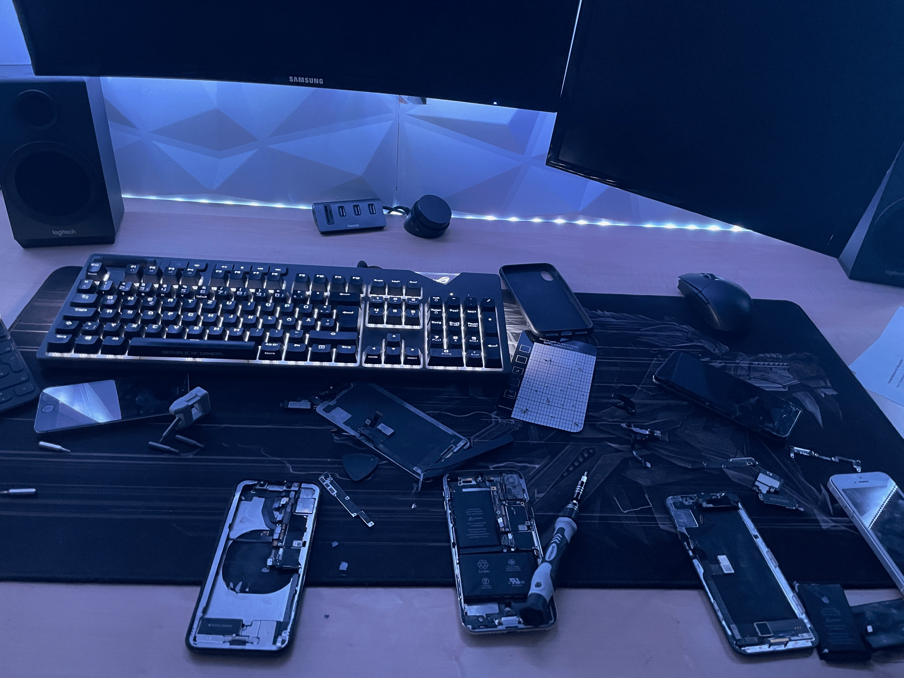

Handy-Reperaturen
Experimentieren/Bauen mit alten Handys
Experimenting/building with old mobile phones
Experimentar/construir con teléfonos móviles antiguos
Expérimenter/construire avec de vieux téléphones portables
- Apple
- Elektrotechnik
- iPhone
Ziel
Durch alte und teilweise beschädigte Handys, sowohl von mir selbst als auch von Familienmitgliedern, konnte ich an verschiedenen iPhones herumprobieren. Das Ziel war es dabei, ein funktionierendes Zweit-Handy zu erhalten, das möglichst wenige Gebrauchsspuren zeigt.
Ablauf
Das Lernen erfolgte hierbei nach dem „Learning by Doing"-Prinzip. Ich begann damit, die Handys auseinanderzubauen und mir alles genau anzuschauen. Mit der Zeit kamen dann Erfahrung und Kenntnisse hinzu.
Ergebnis
Mit viel Trial and Error habe ich es geschafft, aus einem wasserbeschädigten und einem Backglass-beschädigten iPhone X ein gemeinsames, funktionierendes iPhone X zusammenzusetzen. Des Weiteren habe ich es geschafft, ein neues Display in meinem iPhone 12 Pro zu verbauen.
Goal
Due to old and partially damaged mobile phones, both by myself and by family members, I was able to try different iPhones. The goal was to get a functioning second mobile phone that shows as few signs of use as possible.
Process
Learning was carried out according to the "Learning by Doing"principle. I started by disassembling the phones and taking a close look at everything. Over time, experience and knowledge were added.
Results
With a lot of trial and error, I managed to assemble a common, working iPhone X from a water-damaged and a backglass-damaged iPhone X. Furthermore, I managed to install a new display in my iPhone 12 Pro.
Objetivo
A través de teléfonos viejos y parcialmente dañados, tanto por mí como por miembros de la familia, pude probar diferentes iPhones. El objetivo era conseguir un segundo teléfono que funcionara y que mostrara el menor número posible de signos de uso.
Proceso
El aprendizaje se llevó a cabo de acuerdo con el principio de "aprender haciendo". Empecé a desmontar los teléfonos y a echar un vistazo de cerca a todo. Con el tiempo, se añadieron la experiencia y el conocimiento.
Resultado
Con mucho ensayo y error, he logrado ensamblar un iPhone X común y funcional a partir de un iPhone X dañado por el agua y uno dañado por el backglass. Además, he conseguido instalar una nueva pantalla en mi iPhone 12 Pro.
Objectif
Grâce à des téléphones portables anciens et partiellement endommagés, à la fois par moi-même et par les membres de ma famille, j'ai pu essayer différents iPhones. L'objectif était d'obtenir un deuxième téléphone portable fonctionnel qui montre le moins de traces d'utilisation possible.
Déroulement
L'apprentissage s'est déroulé selon le principe de « l'apprentissage par la pratique ». J'ai commencé à démonter les téléphones portables et à tout regarder de près. Au fil du temps, l'expérience et les connaissances ont été ajoutées.
Résultat
Avec beaucoup d'essais et d'erreurs, j'ai réussi à assembler un iPhone X endommagé par l'eau et un iPhone X endommagé par le verre arrière en un iPhone X commun et fonctionnel. De plus, j'ai réussi à installer un nouvel écran dans mon iPhone 12 Pro.
Bilder
